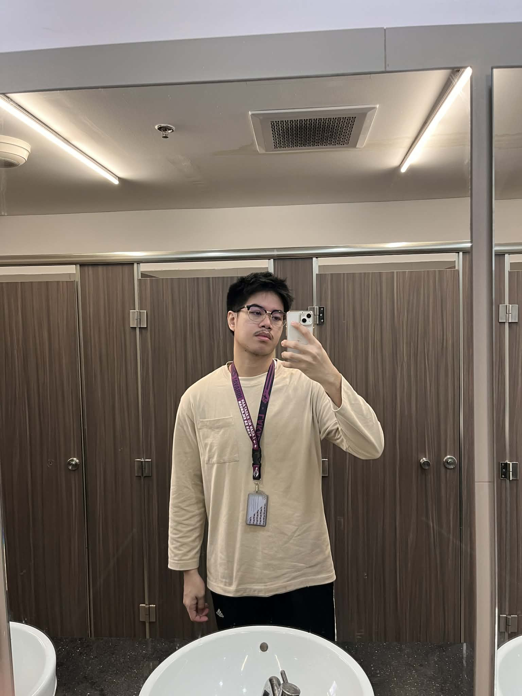

WHERE IT ALL STARTED

If I were to start my story, I think this is the best one that I could think of. I am Ivan and this is how my story begins. As a kid, I was very playful and hyper even though I looked like a stick that time. I remember when I had my first crush during my Kinder days, that’s the first time I felt the “kilig” as every kid feels when they admire someone. When I was a Grade 1 student, I remember passing messages to my crush through paper as if we didn't have anyone else around. I guess that was my first puppy love.
As time went by, I created relationships that I didn’t know I could have. I experienced things good and bad. Bullies are prominent when you’re that skinny kid from grade school and a kind of smarty-pants. As I make enemies, I love making friends too — with my neighbors, classmates, and even kids that are older than me. Extroverted is what I can describe myself at that time.

 >
>
 >
>
 >
>
I guess I can start my teenage years where I did what most all the males do to be called “binata”, circumcision. After that, I felt like a big old man that can do everything. I became physically mature and transitioned from skinny during childhood, to fat, and then to fit. Since the time I graduated, I barely see my grade school friends anymore.
New environment, new Ivan. Grade 8 was the best one as I found special people that are close to my heart even now. But just like other fantasy stories, there are hindrances. Pandemic started, it felt like everything was set to reset. I matured through different experiences and graduated not just in high school but also with my old self.

College life, a new journey that I took bravely. Having these uncertainties was the biggest struggle as I entered college. I wasn’t sure what program to take and what school to go to. The only choice I had at that time was UE. In a snap of a finger, I’m enrolled.
During the first year, I was in survival mode. Over time, I met people who made my college life lighter and more meaningful. With these experiences from childhood up until now, I can say that I’m proud of myself. I may be scared at first, but I always try — and grow.